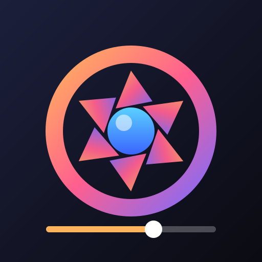

Khuôn mặt trong ảnh nguồn được ghép vào người trong clip, bám theo cử động, há miệng, cười của clip từng khung. Chạy hoàn toàn trên máy — không gửi ảnh/video đi đâu.
Lưu ý: model ghép mặt làm việc ở 128 px nên cận cảnh sát mặt sẽ mất chi tiết; mặt nghiêng quá ~60° được giữ nguyên khung gốc. Nội dung khiêu dâm sẽ bị từ chối.